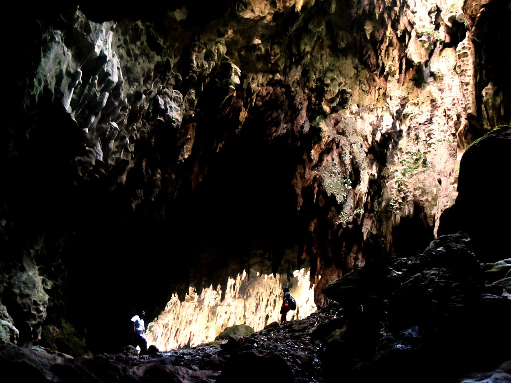
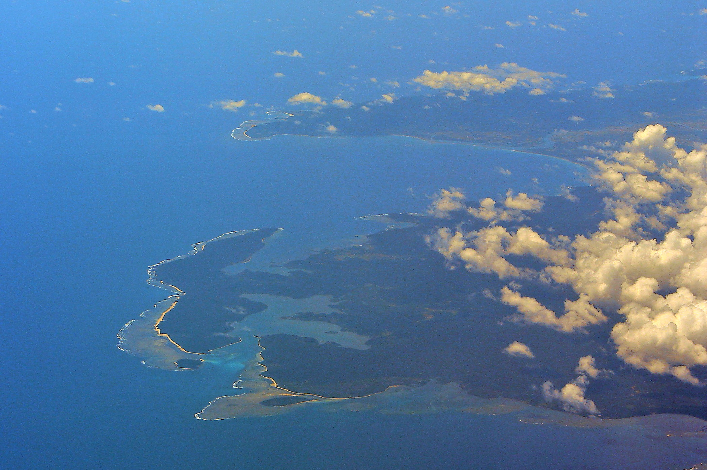

Top Destinations

Callao Cave
A seven-chamber cave in Peñablanca known for its natural cathedral-like formations.
Read More
Buntun Bridge
One of the longest bridges in the Philippines, offering views of the mighty Cagayan River.
Read More

Palanan, Isabela
A coastal gem accessible by plane or boat, rich in biodiversity and history.
Read More